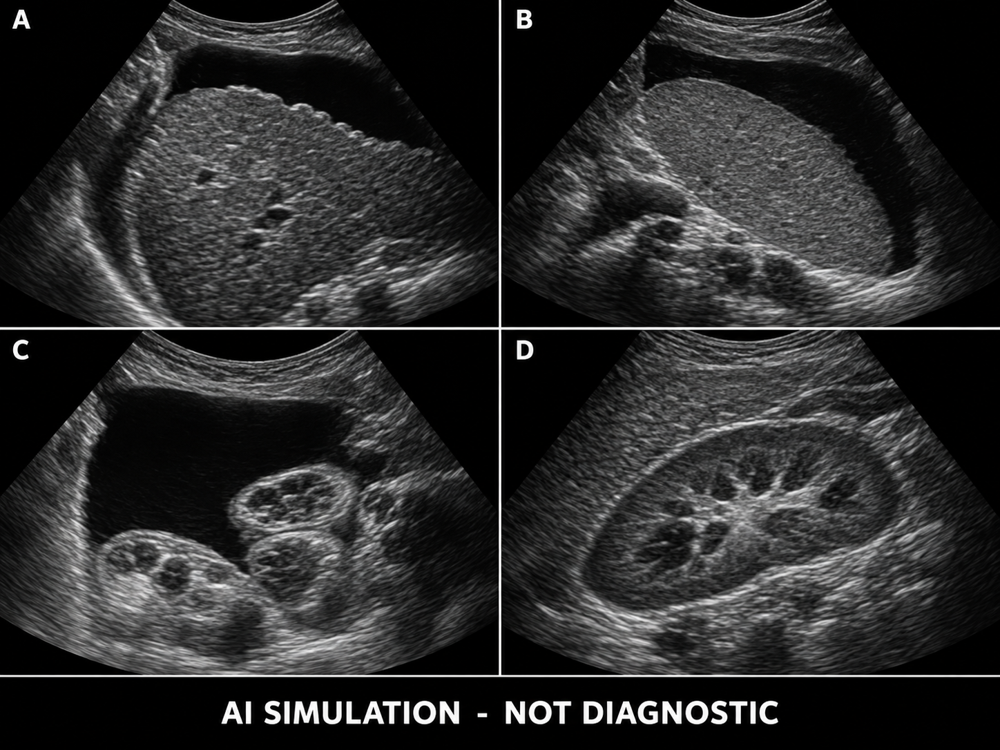
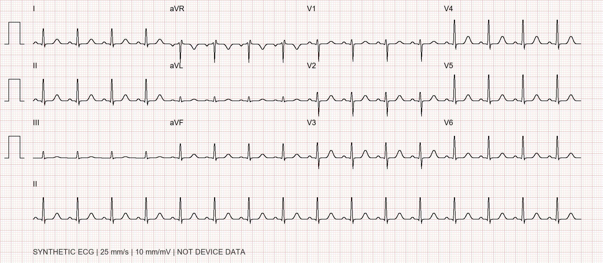

1.3 肝硬化腹水 · 消化内科
王建华 · 56岁 · 男性
乙肝肝硬化失代偿期伴腹水
教学虚构病例，来自1.3任务原始资料。完整病案包含最终诊断与参考处置，供教师和专家审核；学员训练时应按阶段披露。超声与心电图为合成示意。
完整病案 · 32份文书
1. 住院病案复印件 · 专家审核版
病例主题
乙肝肝硬化失代偿期腹水加重，合并自发性细菌性腹膜炎及急性肾损伤，经抗感染、容量管理及腹水治疗后好转出院。
| 项目 | 资料 |
|---|---|
| 姓名 / 性别 / 年龄 | 王建华（虚构） / 男 / 56岁 |
| 科室 / 床号 | 消化内科（肝病病区） / 模拟12床 |
| 病案号 | SIM-ASC-20260901 |
| 入院 / 出院 | 2026-09-01 09:20 / 2026-09-09 10:00 |
| 住院时长 | 8天（跨9个自然日期） |
| 资料版本 | v1.1 / 2026-09-15 / 待临床专家审核 |
| 用途 | 高年级住院医师临床思维训练及临床专家审核 |
文书属性
本册所有身份、病情、检验数值、微生物结果和操作经过均为教学合成，不来自真实患者。本册为完整答案病案，包含最终诊断，不应在考试接诊阶段整册发给学员。
图像与签署
超声图为AI合成示意，心电图为算法绘制示意；文字报告是病例设定，图像不能验证测量值，不能作为真实影像判读考试金标准。无真实医院标志或印章；页尾为虚构医师手写式模拟签名。
资料组成
病案首页、入院记录、首程与逐日病程、检验和检查报告、腹腔穿刺及治疗性放腹水记录、医嘱执行摘要、护理监测、出院记录。教学目标、分阶段披露及审核表另册提供。
2. 住院病案首页
| 登记项目 | 登记内容 |
|---|---|
| 姓名 | 王建华（虚构） |
| 出生日期 / 年龄 | 1970-04-18 / 56岁 |
| 性别 / 民族 / 婚姻 | 男 / 汉族 / 已婚 |
| 职业 / 籍贯 | 仓储管理员 / 四川成都 |
| 现住址 | 四川省成都市武侯区锦和路36号锦和苑3栋502室 |
| 联系人 / 病史提供者 | 妻子（角色家属A） / 患者本人，妻子补充，基本可靠 |
| 入院途径 | 消化内科门诊转住院 |
| 入院诊断 | 乙肝肝硬化失代偿期，腹水加重；腹腔感染待排；肾功能异常待查 |
| 主要出院诊断 | 乙肝肝硬化失代偿期伴腹水 |
| 其他出院诊断 | 自发性细菌性腹膜炎（大肠埃希菌）；急性肾损伤1期（已恢复）；低钠血症（改善）；门静脉高压、脾大伴血小板减少；低白蛋白血症 |
| 诊疗操作 | 09-01诊断性腹腔穿刺；09-03复查穿刺；09-04治疗性放腹水6000 mL |
| 手术 / 输血 | 未行外科手术、TIPS或肝移植；未输注红细胞、血浆或血小板。使用人血白蛋白另见医嘱。 |
| 药物过敏 / 转归 | 否认已知药物过敏 / 好转出院 |
诊断编码、费用、真实证件号及签章未编造。本页为教学病案首页样式，不是行政报送首页。
3. 入院记录（一）· 主诉与现病史
记录时间：2026-09-01 10:00
主诉
反复腹胀6个月，加重伴下肢水肿10天、尿量减少2天。
现病史
患者20年前体检发现乙肝表面抗原阳性，3年前经肝脏影像及血液检查诊断乙肝肝硬化。6个月前首次出现腹胀、双下肢水肿，在门诊接受抗病毒及口服利尿治疗后减轻，未住院，未行腹腔穿刺。近月腹围基本稳定，8月20日体重68 kg，肌酐78 μmol/L。
10天前聚餐及较多进食腌制食品后腹胀逐渐加重，裤腰变紧、早饱，双踝水肿延至小腿。8月28日至30日自行将呋塞米从20 mg/d加至40 mg/d，螺内酯仍为50 mg/d，腹胀无明显缓解。近3天摄食约平日一半，饮水约1000 mL/d；近2天估计尿量由约1500 mL/d降至800-1000 mL/d，尿色深，活动后乏力加重。
无寒战，自测体温最高37.4℃；仅有轻微弥漫腹部隐痛，无持续局限性剧痛。无呕吐、腹泻、呕血及黑便，最近大便黄褐色、每日1次。无咳嗽、咳痰、尿痛；无昼夜颠倒、行为异常或意识模糊。夜间可平卧，无胸痛及端坐呼吸。今门诊查见明显腹水及血压偏低，收入院。
近期用药与暴露
规律服用恩替卡韦1 mg/d（既往已失代偿）、螺内酯50 mg/d、呋塞米20 mg/d；入院当日尚未服利尿剂。否认近期NSAIDs、中草药、造影剂及其他肾毒性药物。近3个月未住院、未用抗菌药，无已知耐药菌定植史。
起病后精神稍差、睡眠受腹胀影响，食欲下降。近期增重主要考虑液体潴留，不能据体重增加排除营养风险。
4. 入院记录（二）· 既往及个人家族史
肝病史
乙肝病程约20年；早期随访不规律。6个月前发生腹水后开始恩替卡韦1 mg每日一次空腹服用，否认漏服及拉米夫定等既往核苷类用药史。无既往SBP、肝性脑病、消化道出血、肝癌或门静脉血栓。
既往检查
2026-06-15门诊胃镜摘要：食管下段小静脉曲张，无红色征，无活动性出血；轻度门静脉高压性胃病。因门诊收缩压多在95-100 mmHg、偶有头晕，尚未启动非选择性β受体阻滞剂，拟肝病专科复评。2026-08-20肌酐78 μmol/L，钠135 mmol/L、钾4.2 mmol/L；当时无明显水肿，体重68 kg。上述为既往资料摘要，未另伪造胃镜原图。
其他既往史
否认高血压、糖尿病、冠心病、心衰、慢性肾病、结核病及恶性肿瘤史。无手术、外伤及输血史。疫苗接种细节不详。否认已知食物及药物过敏。
个人史
出生及长期居住四川成都，已婚，与妻子同住，育有一子。既往吸烟约10包年，5年前戒烟。饮酒量少，确诊肝硬化后已戒酒。无静脉药物使用、纹身及近期疫水接触。工作以站立和轻体力搬运为主。
家族史
母亲乙肝表面抗原阳性，未获知肝癌史；父亲有高血压。无已知遗传性肝病、肾病。
系统回顾
无近期明显消瘦或盗汗；无胸闷心悸、下肢单侧肿痛；无少量多次排尿、血尿或泡沫尿；无皮疹、关节肿痛；无视力异常或局灶性神经症状。
记录医师：赵衡（教学模拟签署）
5. 入院记录（三）· 体格检查
| 项目 | 结果 |
|---|---|
| 生命体征 | T 37.3℃；P 96次/min；R 20次/min；BP 98/62 mmHg；SpO2 97%（空气） |
| 身高 / 体重 / 腹围 | 170 cm / 76.0 kg / 106 cm；近期无水肿时体重68 kg作为估计干重 |
| 一般情况 | 神志清，定向力完整，慢性肝病面容；轻度巩膜黄染，肝掌及上胸部蜘蛛痣 |
| 营养与皮肤 | 颞部及上臂肌肉较薄；皮肤完整，无活动性瘀斑或感染灶 |
| 头颈部 | 无颈静脉怒张，浅表淋巴结未触及肿大 |
| 心肺 | 心率96次/min，律齐，未闻及明显杂音；双肺呼吸音清，无湿啰音 |
| 腹部视触诊 | 腹部膨隆，腹壁稍紧，脐部平；轻度弥漫压痛，无反跳痛及肌紧张；肝脏肋下未触及，脾肋下约2 cm |
| 腹部叩听诊 | 移动性浊音阳性、液波震颤阳性；肠鸣音4次/min；无明显血管杂音 |
| 泌尿及四肢 | 肾区无叩痛，双小腿对称凹陷性水肿2+，肢端温暖 |
| 神经系统 | 扑翼样震颤阴性，无病理反射，无局灶性体征 |
入院初步判断
存在肝硬化失代偿表现及明显腹水。虽无高热，但轻腹痛、尿量减少和血压偏低，需优先评估腹腔感染及循环灌注；不能仅按“低蛋白性水肿”处理。
6. 首次病程记录
记录时间：2026-09-01 10:20（此时腹水结果尚未回报）
病例特点
56岁男性，乙肝肝硬化伴既往腹水，10天腹胀和水肿加重、2天尿量减少。近期高盐饮食、自增利尿剂及摄食减少。体检有腹水、轻腹痛、低正常血压，无腹膜刺激征及意识障碍。
初步诊断及依据
1.乙肝肝硬化失代偿期伴腹水加重：既往肝硬化、腹水史及本次体征支持。2.腹腔感染待排：缺乏发热不能排除SBP。3.肾功能异常待查：需与既往基线及尿量比较。
鉴别诊断
腹水原因包括门静脉高压性、心源性、恶性及结核性腹水；先行SAAG和腹水蛋白评估，再按线索选择进一步检查。少尿需鉴别摄入不足/利尿剂相关低灌注、感染相关肾损伤、HRS-AKI、肾实质损伤及梗阻。持续局限性腹痛或多菌培养需警惕继发性腹膜炎。
诊疗计划
暂停螺内酯及呋塞米；记录血压、尿量、体重和液体出入。急查血常规、肝肾功能、电解质、凝血、CRP、乳酸、尿常规/沉渣及血培养。尽早行超声评估和诊断性腹腔穿刺，送细胞分类、白蛋白、总蛋白、葡萄糖、LDH及培养；腹水床旁接种需在抗菌药前完成。
评估腹膜刺激征、血流动力学及呼吸情况。待腹水快速结果后立即决定抗菌治疗，不等待培养终报。以临床容量状态决定白蛋白及液体策略；不因腹水多而忽视循环灌注，也不盲目大量输液。继续抗病毒，结合肾功能复核剂量。向患者及家属说明诊断与穿刺目的。
上级审核：沈妍；记录：赵衡（均教学模拟签署）
7. 血常规检验报告单
报告号：ASC-L01 标本：EDTA抗凝全血
采集时间：09-01 09:45 报告时间：09-01 10:15
| 检验项目 | 结果 | 提示 | 单位 | 参考区间 / 判读界值 |
|---|---|---|---|---|
| 白细胞 | 7.8 | 10^9/L | 3.5-9.5 | |
| 中性粒细胞比例 | 78 | ↑ | % | 40-75 |
| 中性粒细胞计数 | 6.08 | 10^9/L | 1.8-6.3 | |
| 淋巴细胞比例 | 13 | ↓ | % | 20-50 |
| 淋巴细胞计数 | 1.01 | ↓ | 10^9/L | 1.1-3.2 |
| 单核细胞比例 | 7 | % | 3-10 | |
| 嗜酸性粒细胞比例 | 1.5 | % | 0.4-8 | |
| 嗜碱性粒细胞比例 | 0.5 | % | 0-1 | |
| 红细胞 | 3.65 | ↓ | 10^12/L | 4.3-5.8 |
| 血红蛋白 | 118 | ↓ | g/L | 130-175 |
| 红细胞比容 | 0.35 | ↓ | L/L | 0.4-0.5 |
| 平均红细胞体积 | 95.9 | fL | 82-100 | |
| 平均红细胞血红蛋白量 | 32.3 | pg | 27-34 | |
| 平均红细胞血红蛋白浓度 | 337 | g/L | 316-354 | |
| 血小板 | 68 | ↓ | 10^9/L | 125-350 |
检验方法：模拟实验室常规方法
参考区间为本模拟实验室设定；↑高于参考上限，↓低于参考下限。无统一参考区间的项目仅报告结果，不强行标箭头。
检验者：林砚 审核者：苏禾（角色标识，教学模拟签署）
8. 肝肾功能及电解质检验报告单
报告号：ASC-L02 标本：血清
采集时间：09-01 09:45 报告时间：09-01 10:40
| 检验项目 | 结果 | 提示 | 单位 | 参考区间 / 判读界值 |
|---|---|---|---|---|
| ALT | 38 | U/L | 9-50 | |
| AST | 56 | ↑ | U/L | 15-40 |
| 总胆红素 | 48 | ↑ | μmol/L | 0-21 |
| 直接胆红素 | 26 | ↑ | μmol/L | 0-7 |
| 白蛋白 | 25 | ↓ | g/L | 40-55 |
| 总蛋白 | 61 | ↓ | g/L | 65-85 |
| ALP | 112 | U/L | 45-125 | |
| GGT | 78 | ↑ | U/L | 10-60 |
| 尿素 | 10.2 | ↑ | mmol/L | 3.1-8.0 |
| 肌酐 | 118 | ↑ | μmol/L | 57-97 |
| 钠 | 129 | ↓ | mmol/L | 135-145 |
| 钾 | 4.6 | mmol/L | 3.5-5.3 | |
| 氯 | 97 | ↓ | mmol/L | 99-110 |
| 总二氧化碳 | 22 | mmol/L | 22-29 | |
| 葡萄糖 | 5.8 | mmol/L | 3.9-6.1 | |
| LDH | 180 | U/L | 120-250 |
检验方法：模拟实验室常规方法
本次血清白蛋白在白蛋白输注前采集，与同日腹水白蛋白配对。既往肌酐78 μmol/L（08-20）；肌酐动态升高需结合时间窗判定AKI。
检验者：林砚 审核者：苏禾（角色标识，教学模拟签署）
9. 凝血及炎症指标检验报告单
报告号：ASC-L03 标本：枸橼酸抗凝血浆 / 血清 / 静脉全血
采集时间：09-01 09:45 报告时间：09-01 10:45
| 检验项目 | 结果 | 提示 | 单位 | 参考区间 / 判读界值 |
|---|---|---|---|---|
| 凝血酶原时间 | 17.8 | ↑ | s | 11-14.5 |
| INR | 1.55 | ↑ | 0.8-1.2 | |
| APTT | 38 | ↑ | s | 25-35 |
| 纤维蛋白原 | 1.8 | ↓ | g/L | 2-4 |
| CRP | 42 | ↑ | mg/L | 0-8 |
| 降钙素原 | 0.32 | ↑ | ng/mL | 0-0.05 |
| 静脉乳酸 | 1.8 | mmol/L | 0.5-2.2 |
检验方法：模拟实验室常规方法
炎症标志物不能替代腹水细胞计数。INR反映凝血检验结果，不单独用于预测肝硬化患者低风险穿刺的出血风险。
检验者：林砚 审核者：苏禾（角色标识，教学模拟签署）
10. 尿液与病因筛查报告单
报告号：ASC-L04 标本：清洁中段尿 / 血清
采集时间：09-01 10:00 / 09:45 报告时间：09-01 11:20 / 09-02 09:00
| 检验项目 | 结果 | 提示 | 单位 | 参考区间 / 判读界值 |
|---|---|---|---|---|
| 尿比重 | 1.02 | 1.005-1.03 | ||
| 尿蛋白 | 阴性 | 阴性 | ||
| 尿隐血 | 阴性 | 阴性 | ||
| 尿红细胞 | 1 | 个/HPF | 0-3 | |
| 尿白细胞 | 2 | 个/HPF | 0-5 | |
| 颗粒管型 | 未见 | 未见 | ||
| 尿蛋白/肌酐比 | 0.09 | g/g | 0-0.15 | |
| HBsAg | 阳性 | 阴性 | ||
| HBeAg | 阴性 | 阴性 | ||
| 抗-HBe | 阳性 | 按感染状态解释 | ||
| 抗-HBc | 阳性 | 按感染状态解释 | ||
| HBV DNA | <20 | IU/mL | 低于定量下限20 | |
| 抗-HCV | 阴性 | 阴性 | ||
| HIV抗原/抗体 | 阴性 | 阴性 | ||
| AFP | 4.2 | ng/mL | 0-7 |
检验方法：模拟实验室常规方法
尿常规当日回报；HBV DNA及血清学次日回报。定性阳性直接以文字提示，不使用数值上下箭头。AFP正常不能排除肝癌。
检验者：林砚 审核者：苏禾（角色标识，教学模拟签署）
11. 超声检查报告单
报告号：ASC-US01 检查：2026-09-01 10:35 报告：11:00
检查项目
肝胆脾、门静脉及腹水定位；双肾与膀胱。
文字所见（合成病例设定）
肝包膜欠光整，实质回声增粗、分布不均，未见明确局灶性占位。门静脉主干内径约14 mm，彩色血流示向肝血流，未见明确充盈缺损。脾长径约145 mm、厚约48 mm。腹盆腔多处液性暗区，肝周、脾周及双侧髂窝可见，左下腹可选择安全穿刺窗。胆管无明显扩张。双肾大小形态尚可，集合系统未见扩张，膀胱无明显潴留。
超声提示
肝硬化声像改变；脾大；大量腹水；本次未见明确门静脉血栓、肝内占位或尿路梗阻征象。

图像未包含彩色多普勒，门静脉血流等结论仅为文字设定，不能从本图验证。检查/审核：许澄 / 周岚（教学模拟签署）。
12. 心电图检查报告单
报告号：ASC-ECG01 检查：2026-09-01 10:10 报告：10:20
| 参数 | 结果 |
|---|---|
| 心率 / 节律 | 96次/min / 窦性心律 |
| PR / QRS | 160 ms / 86 ms |
| QT / QTc（Bazett） | 342 ms / 433 ms |
| 电轴 / ST-T | 约+45°；无急性缺血性ST-T改变（病例设定） |

结论：窦性心律，未见明显急性异常。本例无急性胸痛或心衰体征，未为了资料完整而常规加做心肌标志物及心脏超声。
报告医师：陆宁（教学模拟签署）
13. 诊断性腹腔穿刺操作记录
操作日期：2026-09-01 开始11:00，结束11:15
适应证及术前评估
肝硬化腹水加重住院，轻腹痛及肾功能异常，需判断腹水性质及排查感染。意识清楚，BP 98/62 mmHg，未见活动性出血；血小板68×10^9/L、INR1.55。结合超声安全窗及低风险操作性质，不单凭上述指标预防性输注血浆或血小板。
知情同意记录
已向患者及妻子说明目的、替代检查及出血、感染、肠管损伤、漏液等风险，患者理解并同意。此为模拟同意过程记录，无真实签名或法律效力。
操作经过
患者排空膀胱后取仰卧偏左侧位，超声选取左下腹足量游离液体区，避开腹壁血管、肠管及瘢痕。常规消毒铺巾，1%利多卡因5 mL（50 mg）逐层局麻。无菌穿刺进入腹腔，抽得淡黄色微浑浊腹水40 mL。
床旁将腹水各10 mL接种需氧、厌氧血培养瓶；余量分别送细胞计数与分类及生化。腹水采样在头孢曲松和白蛋白输注之前。拔针后局部压迫并敷无菌贴，标本标识核对后立即送检。
术后情况及医嘱
患者无明显不适，BP 100/64 mmHg、P 94次/min，穿刺点干燥，无出血或漏液。观察腹痛、腹围、脉搏、血压及局部情况。该次仅诊断取样，不属于大量放腹水，无按放液量补白蛋白指征；当日白蛋白另用于SBP相关肾损伤风险管理。
操作者：赵衡；指导者：沈妍；护士：姜悦（教学模拟签署）
14. 腹水常规及生化报告单
报告号：ASC-A01 标本：腹水
采集时间：09-01 11:05 报告时间：09-01 11:45（细胞）/ 12:00（生化）
| 检验项目 | 结果 | 提示 | 单位 | 参考区间 / 判读界值 |
|---|---|---|---|---|
| 颜色 / 透明度 | 淡黄色 / 微浑浊 | 描述性项目 | ||
| 有核细胞总数 | 1000 | 个/μL | 无统一正常参考区间 | |
| 中性粒细胞比例 | 64 | % | 结合绝对计数 | |
| 中性粒细胞绝对计数 | 640 | ↑ | 个/μL | <250；≥250为SBP诊断界值 |
| 红细胞 | 400 | 个/μL | 结合穿刺情况 | |
| 腹水白蛋白 | 7 | g/L | 结合同时血清白蛋白 | |
| 腹水总蛋白 | 10 | g/L | 结合病因；<15提示低蛋白腹水 | |
| 葡萄糖 | 5.5 | mmol/L | 结合血糖及临床 | |
| LDH | 72 | U/L | 结合血清LDH上限250 |
检验方法：细胞计数/涂片分类及常规生化；均为模拟结果
有核细胞1000×中性粒细胞64%=640个/μL。血清白蛋白25 g/L、腹水白蛋白7 g/L，SAAG=18 g/L。PMN箭头相对临床判读界值，而非健康人的腹水参考区间。低蛋白、葡萄糖未降低及LDH未升高不能单独排除继发性腹膜炎。
检验者：林砚 审核者：苏禾（角色标识，教学模拟签署）
15. 当日病程及上级医师查房记录
2026-09-01 12:15
检查结果与诊断修正
腹水PMN640个/μL，SAAG18 g/L；腹水总蛋白10 g/L，血清Cr118 μmol/L、Na129 mmol/L、ALB25 g/L。初步明确门静脉高压相关腹水合并SBP。无局限性腹膜刺激征，腹水生化暂不支持继发性腹膜炎，但须观察治疗反应。
肾功能判断
08-20基线Cr78至当前118 μmol/L，增幅51%，但基线距今超过7天；当前先记“疑似AKI”，不能仅凭该旧值直接套用7日标准。患者近2天少尿，感染、摄入不足及自行加利尿剂均可能参与。次日复查及短期动态用于确认。
治疗执行
11:50开始头孢曲松2 g静脉滴注，每24小时一次。社区起病、近期无抗菌药/住院及已知耐药史；本模拟场景假定本院社区SBP经验方案允许使用该药，培养结果后复核。12:10开始20%人血白蛋白，按估计干重68 kg×1.5 g/kg=102 g（510 mL），分次缓慢输注并监测呼吸、SpO2、血压和肺部体征。
暂缓利尿剂和大量放腹水，腹胀虽明显但暂无呼吸受限或腹腔间隔室综合征证据；先控制感染和评估灌注。无休克，暂不使用血管收缩药。饮食限钠约2 g/d（折合食盐约5 g/d），保障能量及蛋白；Na129且无神经症状，不作常规严格限水。
严重程度
入院Child-Pugh按胆红素2分、白蛋白3分、INR1分、大量腹水3分、无脑病1分，共10分，C级；腹水评分属于临床判断。感染和肾功能异常增加短期风险，需密切观察。
2026-09-01 18:00：输注过程无呼吸困难或湿啰音，BP102/64 mmHg；仍腹胀，无腹膜刺激征。向家属交代夜间观察重点及病情变化可能。
16. 住院第2日肾功能与电解质报告单
报告号：ASC-L05 标本：血清
采集时间：09-02 06:00 报告时间：09-02 07:30
| 检验项目 | 结果 | 提示 | 单位 | 参考区间 / 判读界值 |
|---|---|---|---|---|
| 肌酐 | 150 | ↑ | μmol/L | 57-97 |
| 尿素 | 11.8 | ↑ | mmol/L | 3.1-8 |
| 钠 | 128 | ↓ | mmol/L | 135-145 |
| 钾 | 4.8 | mmol/L | 3.5-5.3 | |
| 氯 | 96 | ↓ | mmol/L | 99-110 |
| 总二氧化碳 | 21 | ↓ | mmol/L | 22-29 |
| 白蛋白 | 30 | ↓ | g/L | 40-55 |
| 总胆红素 | 46 | ↑ | μmol/L | 0-21 |
| CRP | 38 | ↑ | mg/L | 0-8 |
检验方法：模拟实验室常规方法
肌酐由前日118升至150 μmol/L，约20小时内增加32 μmol/L，满足AKI的48小时绝对升幅标准。相对可靠既往基线78为1.92倍，当前最高按1期记录。
检验者：林砚 审核者：苏禾（角色标识，教学模拟签署）
17. 住院第2日病程及肾脏专科会诊
2026-09-02 09:00
病情变化
T37.1℃，BP104/66 mmHg，P90次/min；24小时尿量900 mL，体重76.1 kg。腹部仍膨隆，轻压痛较前减轻，无反跳痛。无黑便、意识改变、低氧及肺部啰音。Cr150 μmol/L，Na128 mmol/L。
AKI诊断
前日Cr118至今150，48小时内增加32 μmol/L；以08-20已知稳定78 μmol/L作分期基线，峰值为1.92倍，AKI1期。单凭每日尿量900 mL不能证明连续6小时符合少尿标准，本例诊断依据为肌酐。
会诊意见（10:30）
考虑感染诱发并伴有效循环容量不足的AKI，近期进食少和自增利尿剂可能促成。尿沉渣无显著活动性改变，蛋白尿少，超声无梗阻；目前缺乏支持肾小球肾炎或明显肾小管坏死的证据，但无法仅凭这些完全排除。HRS-AKI为需追踪的鉴别诊断，尚不能由“肝硬化+AKI”直接确诊。
处理及再评估
继续暂停利尿，继续抗菌治疗，严密记录出入量。结合末梢灌注、血压、肺部与床旁容量评估决定是否进一步补液；既已完成SBP首日白蛋白且无休克，不机械追加固定48小时扩容。无明确HRS-AKI，不启动特利加压素。24小时内复查肾功能、电解质，恶化时提前复查。
16:00腹水培养初步提示革兰阴性杆菌，药敏未回；血培养暂未检出。继续当前方案并观察。
抗病毒用药核对
峰值肌酐150 μmol/L时，按估计干重粗估CrCl约47 mL/min。恩替卡韦临时调整为1 mg每48小时：09-01已服，09-02暂停一次，次日复核肾功能。
会诊：陈谨；记录：赵衡（教学模拟签署）
18. 腹水细菌培养与药敏报告单
报告号：ASC-M01 标本：腹水床旁接种需氧/厌氧培养瓶
采集时间：09-01 11:05 报告时间：09-03 09:30（终报）
| 检验项目 | 结果 | 提示 | 单位 | 参考区间 / 判读界值 |
|---|---|---|---|---|
| 培养结果 | 大肠埃希菌 | 阳性；单一菌种 | ||
| 头孢曲松 | 敏感（S） | 模拟药敏分类 | ||
| 哌拉西林/他唑巴坦 | 敏感（S） | 模拟药敏分类 | ||
| 美罗培南 | 敏感（S） | 模拟药敏分类 | ||
| 环丙沙星 | 敏感（S） | 模拟药敏分类 | ||
| 复方磺胺甲噁唑 | 敏感（S） | 模拟药敏分类 | ||
| 氨苄西林 | 耐药（R） | 模拟药敏分类 | ||
| ESBL筛查 | 阴性 | 阴性 |
检验方法：模拟实验室常规方法
09-02 16:00初报革兰阴性杆菌；09-03鉴定及药敏终报。S/R为虚构病例的预设分类，未虚构仪器MIC或实验室断点版本。采样在首剂抗菌药之前。
检验者：林砚 审核者：苏禾（角色标识，教学模拟签署）
19. 住院第3日复查检验报告单
报告号：ASC-L06 标本：血清 / EDTA全血 / 腹水
采集时间：09-03 06:00（血）/ 11:50（腹水） 报告时间：09-03 07:30 / 12:30
| 检验项目 | 结果 | 提示 | 单位 | 参考区间 / 判读界值 |
|---|---|---|---|---|
| 白细胞 | 5.6 | 10^9/L | 3.5-9.5 | |
| 血红蛋白 | 116 | ↓ | g/L | 130-175 |
| 血小板 | 70 | ↓ | 10^9/L | 125-350 |
| 肌酐 | 112 | ↑ | μmol/L | 57-97 |
| 尿素 | 9.5 | ↑ | mmol/L | 3.1-8 |
| 钠 | 130 | ↓ | mmol/L | 135-145 |
| 钾 | 4.5 | mmol/L | 3.5-5.3 | |
| CRP | 20 | ↑ | mg/L | 0-8 |
| 腹水有核细胞总数 | 300 | 个/μL | 无统一参考区间 | |
| 腹水中性粒细胞比例 | 40 | % | 结合绝对计数 | |
| 腹水PMN绝对计数 | 120 | 个/μL | <250；≥250为SBP诊断界值 |
检验方法：模拟实验室常规方法
复查穿刺距首剂头孢曲松约48小时；PMN由640降至120个/μL，下降81.25%。血标本于第3日白蛋白输注前采集。
检验者：林砚 审核者：苏禾（角色标识，教学模拟签署）
20. 住院第3日病程及复查穿刺记录
2026-09-03 09:00 / 11:45-12:00 / 14:00
查房情况
无发热，BP106/66 mmHg，P84次/min，尿量1300 mL/24h，体重75.8 kg。腹痛消失，腹胀仍较明显；无腹膜刺激征、脑病及呼吸困难。Cr从150降至112 μmol/L，Na130 mmol/L。
复查穿刺
因本例曾发生肾功能恶化，拟复查治疗反应。再次说明并获得模拟知情同意；超声选择左下腹安全窗，无菌操作，1%利多卡因3 mL局麻，抽取腹水20 mL送细胞分类及培养，拔针压迫敷贴。术前后血压稳定，无出血、漏液及明显腹痛。操作者赵衡，指导者沈妍。
结果解释
PMN120个/μL，较640下降81.25%，低于250；培养为头孢曲松敏感大肠埃希菌，症状与肾功能同步改善，支持当前抗菌方案有效。无证据要求升级碳青霉烯；无继发性腹膜炎临床新线索，暂不行增强CT。若反应不佳则重新检查病因与感染源。
治疗
继续头孢曲松2 g每日一次，预计总疗程7天（09-01至09-07）。按SBP方案第3日20%白蛋白68 g（340 mL），分次监测输注。继续暂缓利尿，次日复查肾功能，如灌注稳定可考虑治疗性放腹水缓解症状。
不因肾功能短期改善就宣布所有肾病已排除；但当前恢复轨迹不支持把HRS-AKI写成已确诊的出院诊断。
肌酐112 μmol/L时粗估CrCl约63 mL/min，恩替卡韦恢复1 mg每日一次空腹口服。
21. 放腹水前安全评估检验单
报告号：ASC-L07 标本：血清 / 枸橼酸血浆 / EDTA全血
采集时间：09-04 06:00 报告时间：09-04 07:30
| 检验项目 | 结果 | 提示 | 单位 | 参考区间 / 判读界值 |
|---|---|---|---|---|
| 肌酐 | 96 | μmol/L | 57-97 | |
| 尿素 | 7.6 | mmol/L | 3.1-8 | |
| 钠 | 132 | ↓ | mmol/L | 135-145 |
| 钾 | 4.3 | mmol/L | 3.5-5.3 | |
| 白蛋白 | 32 | ↓ | g/L | 40-55 |
| 总胆红素 | 38 | ↑ | μmol/L | 0-21 |
| INR | 1.45 | ↑ | 0.8-1.2 | |
| 血小板 | 72 | ↓ | 10^9/L | 125-350 |
检验方法：模拟实验室常规方法
结合查体无出血、血流动力学稳定及超声安全窗，决定行治疗性放腹水。白蛋白水平受前期输注影响，不作为肝合成功能短期恢复的单独证明。
检验者：林砚 审核者：苏禾（角色标识，教学模拟签署）
22. 治疗性腹腔穿刺放液记录
2026-09-04 开始10:00，结束11:40
操作前诊断及适应证
肝硬化大量腹水；SBP治疗反应良好，肾功能恢复。仍明显腹胀早饱，腹壁紧张。BP108/68 mmHg，P82次/min，SpO2 98%。当前未符合难治性腹水定义。
知情同意与准备
说明放液目的、白蛋白补充及出血、感染、低血压、循环功能障碍、漏液等风险，患者同意。核对身份和超声窗，排空膀胱；无预防性血浆/血小板输注。
操作经过
取半卧位，超声选左下腹安全液体区，避开腹壁血管。常规无菌消毒铺巾，1%利多卡因5 mL局麻后置入一次性腹腔穿刺导管，分段观察下缓慢放出淡黄色清亮腹水共6000 mL。期间每15分钟观察生命体征和症状。未留置持续引流管，操作完成拔管、压迫并敷无菌贴。
白蛋白与安全记录
按放液量6 L×8 g/L，另予20%人血白蛋白48 g（240 mL）于操作结束后缓慢静滴并监测。此为放腹水适应证，与09-01、09-03的SBP方案分别记录，非同日重复计算。
术后
末次BP106/66 mmHg，P80次/min，SpO2 98%；腹胀明显缓解，腹围由105 cm降至96 cm，体重由75.6 kg降至69.6 kg。局部无渗血漏液，无腹痛加重及晕厥。继续观察2小时，次晨复查肾功能和电解质。
操作医师赵衡；指导医师沈妍；护士姜悦（均为模拟角色）。本例未行外科手术，本记录为有创操作记录。
23. 住院第4至6日病程记录
09-04 17:00 · 放腹水后查房
患者可较舒适进食和平卧，BP108/68 mmHg，穿刺点干燥，无发热及腹痛。无肺水肿表现。记录放液6000 mL为操作排液，不将当日6 kg体重下降解释为利尿效果。继续监测，暂不追加利尿剂。
09-05 09:00 · 恢复低剂量利尿
T36.7℃，BP110/68 mmHg，体重69.4 kg，尿量1400 mL/24h。Cr88 μmol/L、Na133、K4.2 mmol/L。腹水少量残留，踝部轻度水肿。恢复螺内酯50 mg每日一次、呋塞米20 mg每日一次，均口服；因近期AKI从低剂量开始，当前不需要追求最大剂量。每日同条件称重，观察血压、尿量及肌酐和电解质。
09-06 09:00 · 疗效与营养
T36.6℃，BP110/70 mmHg，体重69.0 kg，尿量1800 mL/24h；轻踝部水肿，腹痛无再发，正常排便。体重较前日下降0.4 kg，耐受良好。血培养5天终报未检出细菌；09-03腹水复培养尚未终报，不误写为已阴性。
营养和活动计划
按估计干重68 kg安排约2040-2380 kcal/d，蛋白约82-102 g/d，少量多餐及睡前加餐。既有水肿又有肌肉减少体征，不能用含腹水体重直接判断营养充分。无需常规限蛋白；在耐受范围内步行和轻量抗阻活动。
饮食、体重和药量由医护共同核对。低钠饮食不等于完全无盐；无严重低钠及神经症状，不常规严格限水。
24. 治疗后肾功能及出院前检验单
报告号：ASC-L08 标本：血清 / EDTA全血 / 枸橼酸血浆
采集时间：09-05 / 09-07 / 09-09 06:00 报告时间：对应日期07:30
| 检验项目 | 结果 | 提示 | 单位 | 参考区间 / 判读界值 |
|---|---|---|---|---|
| 09-05 肌酐 | 88 | μmol/L | 57-97 | |
| 09-05 钠 | 133 | ↓ | mmol/L | 135-145 |
| 09-05 钾 | 4.2 | mmol/L | 3.5-5.3 | |
| 09-07 肌酐 | 84 | μmol/L | 57-97 | |
| 09-07 钠 | 134 | ↓ | mmol/L | 135-145 |
| 09-07 钾 | 4.1 | mmol/L | 3.5-5.3 | |
| 09-07 CRP | 5 | mg/L | 0-8 | |
| 09-09 肌酐 | 82 | μmol/L | 57-97 | |
| 09-09 尿素 | 5.6 | mmol/L | 3.1-8 | |
| 09-09 钠 | 134 | ↓ | mmol/L | 135-145 |
| 09-09 钾 | 4.2 | mmol/L | 3.5-5.3 | |
| 09-09 白蛋白 | 32 | ↓ | g/L | 40-55 |
| 09-09 总胆红素 | 30 | ↑ | μmol/L | 0-21 |
| 09-09 INR | 1.35 | ↑ | 0.8-1.2 | |
| 09-09 白细胞 | 4.2 | 10^9/L | 3.5-9.5 | |
| 09-09 血红蛋白 | 119 | ↓ | g/L | 130-175 |
| 09-09 血小板 | 75 | ↓ | 10^9/L | 125-350 |
检验方法：模拟实验室常规方法
这是模拟LIS多时点归并打印单，每个项目保留采集日期；并非同次采血。Na134仍低于本实验室下限，出院诊断写“改善”，不写“完全正常”。
检验者：林砚 审核者：苏禾（角色标识，教学模拟签署）
25. 微生物培养终报
| 报告号 / 时间 | 标本 / 结果 |
|---|---|
| ASC-M02 / 09-06 10:00 | 09-01 09:50采集两组外周血培养；培养5天未检出细菌。 |
| ASC-M03 / 09-08 12:30 | 09-03 11:50采集复查腹水培养；培养5天未检出细菌。 |
微生物结果均为病例合成；培养阴性不能在缺乏细胞计数及临床评估时单独证明感染排除。
26. 出院前超声检查报告单
ASC-US02 · 09-08 09:30复查超声报告
肝脾形态与前相仿，腹盆腔少量游离液体，较前明显减少；未见新发明确肝内占位或门静脉主干血栓。双肾集合系统无扩张。
检查目的：评估残余腹水及肾脏情况。复查仅提供文字报告，不复用入院大量腹水示意图冒充复查图像。
27. 住院第7至8日病程记录
09-07 09:00病程
体重68.6 kg，BP112/70 mmHg，尿量1700 mL/24h，腹痛和水肿消失。Cr84，Na134，K4.1，CRP5。完成第7天头孢曲松后停药。既往无SBP，本次确诊并恢复，评估启动二级预防。
09-08 09:00病程
体重68.3 kg，BP110/68 mmHg，尿量1500 mL/24h；进食睡眠改善。综合药敏、肾功能、药物相互作用及不良反应风险，开始环丙沙星500 mg口服每日一次用于SBP二级预防；告知肌腱疼痛、周围神经症状及严重腹泻等需及时联系医生。该方案须随耐药谱及耐受性复评。
随访安排
预约09-12复查肾功能及电解质；09-16肝病/肝移植评估门诊，讨论失代偿后的长期策略。未将TIPS或肝移植写成本次已完成治疗。
28. 医嘱与执行摘要
| 药品 | 剂量 / 途径 / 频次 | 时间 | 用途与核对 |
|---|---|---|---|
| 头孢曲松 | 2 g / 静脉滴注 / 每24小时 | 09-01 11:50至09-07，共7次 | SBP治疗；培养敏感后继续，09-07完成后停止 |
| 20%人血白蛋白 | 102 g=510 mL / 静滴 / 一次疗程分次 | 09-01 | SBP第1日，估计干重68×1.5；监测输注耐受 |
| 20%人血白蛋白 | 68 g=340 mL / 静滴 / 一次疗程分次 | 09-03 | SBP第3日，68×1；不是按血清白蛋白补至正常 |
| 20%人血白蛋白 | 48 g=240 mL / 静滴 | 09-04放液后 | 放腹水6 L×8 g/L；与SBP方案分日记录 |
| 螺内酯 | 50 mg / 口服 / 每日一次 | 09-01至04暂停；09-05恢复 | 监测血钾、肌酐、血压；本例低剂量重启 |
| 呋塞米 | 20 mg / 口服 / 每日一次 | 09-01至04暂停；09-05恢复 | 与螺内酯合用；不自行加量 |
| 恩替卡韦 | 1 mg / 口服 / 每日一次空腹 | 09-01服用；09-02暂停一次；09-03恢复 | AKI峰值临时改每48小时；恢复后1 mg/d，出院继续 |
| 环丙沙星 | 500 mg / 口服 / 每日一次 | 09-08起，09-16复评 | SBP二级预防；非延长急性感染静脉疗程 |
| 1%利多卡因 | 5/3/5 mL / 局部浸润 / 各一次 | 09-01 / 03 / 04操作时 | 分别50/30/50 mg；无其他同日局麻药 |
此为该患者实际用药的合成执行摘要，不是扩展HIS药品目录。每次静脉药物的稀释、输注速率及制剂规格须依据本地说明书和药学审核，不伪造批号。
恩替卡韦峰值肌酐150 μmol/L时，以56岁男性、估计干重68 kg作Cockcroft-Gault粗估约47 mL/min，但AKI时估算不稳定；当日由临床药师评估临时改为1 mg每48小时（09-02暂停一次），09-03肌酐112后恢复1 mg/d。详见下页核对说明。
29. 药学核对与非药物医嘱
恩替卡韦调量明细
既往长期1 mg/d。本次09-01已服1 mg；09-02肌酐峰值150时粗估CrCl约47 mL/min，按说明书30-49 mL/min失代偿剂量可用1 mg每48小时，因此09-02不服；09-03肌酐112，粗估约63 mL/min，恢复1 mg/d。AKI时CrCl估计有局限，需动态复评；本例无透析。空腹指餐前或餐后至少2小时。
抗菌药核对
头孢曲松为病例设定的社区起病经验方案，药敏支持。不得将本例药敏推广为当地真实耐药率。环丙沙星用于SBP二级预防，需评估耐药、QT、肌腱/神经不良反应及艰难梭菌风险；与钙、铁、镁等多价阳离子制剂错开服用。肾功能恶化时重新核对剂量。
利尿安全
开始时与每次剂量调整后检查血压、体重、尿量、肌酐、Na/K。无外周水肿时每日体重下降一般不超过0.5 kg，有水肿时一般不超过1 kg；本例以更缓慢下降为目标。09-04因放液下降6 kg单独记录。若头晕、少尿、肌酐上升、显著低钠或高低钾，及时暂停/调整并查因。
非药物医嘱
消化内科护理，入院早期每4小时生命体征；白蛋白输注及操作期加密监测。每日晨起排尿后同秤称重，定点测腹围，记录出入量。限钠约2 g/d，保障营养；饮水依血钠和容量状态个体化。鼓励耐受范围内活动，防跌倒。
本例未使用的治疗
无肝性脑病，不常规给予乳果糖/利福昔明；无消化道出血，不予止血药或经验性PPI；无HRS-AKI确诊，不使用特利加压素；无明显腹水难治性证据，不安排TIPS。既往小静脉曲张的预防策略待循环稳定后专科复评。
30. 护理记录与病情趋势
| 日期 | 体重kg | 腹围cm | BP mmHg | 尿量mL | 关键事项 |
|---|---|---|---|---|---|
| 09-01 | 76.0 | 106 | 98/62 | 900 | 诊断穿刺40 mL；白蛋白102 g |
| 09-02 | 76.1 | 106 | 104/66 | 900 | AKI确认；继续停利尿 |
| 09-03 | 75.8 | 105 | 106/66 | 1300 | 复查穿刺20 mL；白蛋白68 g |
| 09-04 | 75.6→69.6 | 105→96 | 108/68 | 1400 | 放液6000 mL；白蛋白48 g |
| 09-05 | 69.4 | 96 | 110/68 | 1400 | 恢复低剂量双利尿 |
| 09-06 | 69.0 | 95 | 110/70 | 1800 | 耐受良好 |
| 09-07 | 68.6 | 95 | 112/70 | 1700 | 完成7天静脉抗菌 |
| 09-08 | 68.3 | 94 | 110/68 | 1500 | 开始SBP二级预防 |
| 09-09 | 68.1 | 94 | 112/70 | 1500 | 出院 |
尿量按当日查房前最近24小时统计；09-01为患者自述估计量，之后为病房记录。09-04体重和腹围注明操作前后值。未留置导尿管，使用专用量杯记录。
护理观察
患者住院期间神志清，无呕血黑便及跌倒；各穿刺点保持干燥，无持续漏液或明显血肿。白蛋白输注期间无急性呼吸困难、低氧及湿啰音。
健康教育与复述
患者能复述“利尿药不能自行加量；每日同条件称重；出现尿量明显减少、发热腹痛、黑便或意识变化要及时就医”。妻子参与药物整理与饮食计划。
护理记录者：姜悦；查对者：宋青（教学模拟签署）
31. 出院记录
出院日期：2026-09-09 10:00
入院情况
因反复腹胀6个月、加重10天伴尿量减少2天入院。入院体重76 kg、大量腹水、双下肢水肿，BP98/62 mmHg。腹水PMN640个/μL、SAAG18 g/L，随后培养大肠埃希菌。
诊疗经过
及时完成腹腔穿刺，给予头孢曲松7天及SBP方案白蛋白。第2日Cr由118升至150 μmol/L，确认AKI1期，暂停利尿、评估灌注及肾损伤病因，并短暂调整恩替卡韦给药间隔。第3日腹水PMN下降至120，Cr112。第4日Cr96后行治疗性放腹水6 L并补白蛋白48 g；第5日起恢复低剂量螺内酯/呋塞米，肾功能稳定。第8日起SBP二级预防。
出院诊断
1.乙肝肝硬化失代偿期伴腹水。2.自发性细菌性腹膜炎（大肠埃希菌，已控制）。3.急性肾损伤1期（已恢复，感染及有效循环容量不足相关）。4.低钠血症（改善）。5.门静脉高压，脾大伴血小板减少。6.低白蛋白血症。
出院情况
体温36.6℃，P78次/min，BP112/70 mmHg，神志清，饮食改善，无腹痛，少量残余腹水，无明显外周水肿。体重68.1 kg；Cr82 μmol/L、Na134、K4.2 mmol/L，ALB32 g/L、TBil30 μmol/L、INR1.35。肌酐距既往基线仅增加4 μmol/L，符合恢复轨迹。
严重程度与转归
出院Child-Pugh按胆红素1、白蛋白2、INR1、利尿可控少量腹水2、无脑病1，共7分，B级；近期白蛋白输注影响评分解释。临床好转不等于肝硬化治愈。无证据确诊HRS-AKI或难治性腹水。
出院医嘱及随访见下一页。记录医师赵衡；上级医师沈妍（教学模拟签署）。
32. 出院带药及随访计划
| 药物 | 用法 | 目的 / 复核 |
|---|---|---|
| 恩替卡韦 | 1 mg口服，每日一次，空腹 | 持续抗病毒，不自行停药；监测肾功能与HBV DNA |
| 螺内酯 | 50 mg口服，每日一次 | 控制腹水；监测肌酐、血钾、血钠、血压 |
| 呋塞米 | 20 mg口服，每日一次 | 控制腹水；不自行加量 |
| 环丙沙星 | 500 mg口服，每日一次；先开至09-16复诊 | SBP二级预防，复诊决定续方；不可理解为仅需预防7天 |
近期复查
09-12（出院后3天）：血压、体重、肾功能、Na/K，核对利尿药耐受性；如异常提前就诊。09-16：肝病专科和肝移植评估门诊，复查血常规、肝功能及凝血，评估腹水、营养及二级预防药物。
长期管理
维持低钠饮食与足量能量、蛋白，少量多餐及睡前加餐，戒酒。每日称重并记录；避免自行使用NSAIDs及来历不明中草药。规律抗病毒随访，按专科计划监测HBV DNA；肝癌监测一般每6个月超声联合AFP，下次计划2027-03，异常时提前进一步检查。既往静脉曲张及NSBB耐受性于近期专科复评。
需要及时就医
发热或新发腹痛、尿量明显减少、持续头晕/晕厥、呕血黑便、嗜睡或行为异常、呼吸困难应立即就医；腹围及体重连续上升、食欲再次下降应尽早联系随访医生。出现肌腱痛、麻木或严重腹泻须及时复核环丙沙星。
患者理解确认
患者和妻子能够复述药物名称、不能自行增加利尿剂及复查日期。已解释病情仍需长期管理，肝移植评估不是已经确定接受移植。
教师教学设计与审核
1. 教师用病例设计与教学目标
版本与使用范围
v1.1 / 2026-09-15 / 待临床专家审核。本册含答案与预设病程。患者为王建华，56岁男性，核心主线为肝硬化腹水加重、SBP、可逆性AKI及治疗后好转。
总体目标
高年级住院医师能在资料分阶段出现时，独立完成问题表征、优先级安排、检查选择、结果解释、治疗与再评估，并说明触发方案改变的证据。
| 目标 | 可观察表现 | 评价证据 |
|---|---|---|
| O1 问题表征 | 用一句话概括肝病背景、腹水变化及危险信号，优先排查感染与灌注不足。 | 首程/口头交接 |
| O2 腹水病因 | 计算SAAG=25-7=18 g/L，结合腹水蛋白及临床鉴别心源性、恶性、结核等。 | 检查选择与结果解释 |
| O3 隐匿感染 | 无发热时仍及时穿刺；PMN640触发SBP处理，不等待培养。 | 行动时间与依据 |
| O4 AKI动态识别 | 识别118→150的短期变化；不能仅凭超过7天的旧基线推定起病时间。 | 趋势解释及诊断修订 |
| O5 个体化治疗 | 把感染期、肾功能恢复期、腹水控制期区分，说明停利尿/恢复和白蛋白适应证。 | 医嘱及再评估计划 |
| O6 治疗反应 | PMN下降81.25%、症状及肌酐共同好转；据药敏继续治疗，避免无依据升级。 | 查房记录 |
| O7 升级与鉴别 | 持续肾损伤时再评估HRS等；治疗失败时排查继发性腹膜炎；核实难治性腹水定义。 | 分支推理 |
| O8 连续照护 | 明确SBP二级预防、营养、病因治疗、监测及移植评估，患者能复述。 | 出院计划和沟通 |
评价重点是证据、时机与修正能力。评分权重、及格线、关键错误是否“一票否决”均未设定，待专家及教学团队审定。
2. 病例标准答案 · 关键推理链
1. 为什么先排查感染
新近腹水加重住院，合并腹部不适与肾功能异常；无高热、血WBC未升高并不能排除SBP。腹水PMN绝对计数而非培养阳性是及时行动的关键。
2. 为什么不直接等同于肝肾综合征
肌酐在20小时内增加32 μmol/L确认AKI。近期摄入不足、自增利尿和感染可共存。尿沉渣和超声用于排查替代原因，但正常结果不能单独确认HRS。停利尿和感染治疗后迅速恢复，最终不写确诊HRS-AKI。[S5]
3. 为什么治疗分阶段
首日控制感染、暂停利尿并评估循环；感染和肾功能改善后放腹水，再低剂量恢复利尿。SBP白蛋白按估计干重计算；放腹水白蛋白按排液量计算，不能混为“白蛋白低就输”。[S3,S4]
4. 为什么当前不用TIPS
尚未在充分、可耐受治疗及依从性核实后证明腹水难治；本次已改善。TIPS作为复发难治腹水的备选，需评估心肺、肝功能、感染及脑病风险。移植评估可在失代偿后启动，不等到所有治疗失效。[S2,S6]
5. 为什么出院仍需随访
AKI恢复但低钠、低白蛋白、门静脉高压及慢性肝病仍在。SBP后需讨论二级预防、抗病毒、营养、肝癌和静脉曲张管理。不能用“好转”替代具体复查与安全计划。
指南更新点：ADQI-ICA 2024反对一律先输白蛋白48小时作为HRS-AKI诊断前提；具体容量处理依临床评估。该领域仍存在讨论，评分不绑定单一机械流程。
3. 五场景资料披露与角色约定
| 场景 | 资料释放 | 学员任务 |
|---|---|---|
| 接诊 | 09-01 09:20-11:00；入院三页病史与查体、既往门诊摘要、ASC-L01、ASC-L02、ASC-L03、ASC-L04尿液部分、ASC-US01、ASC-ECG01 | 完成问题表征和鉴别；提出腹腔穿刺及必要检查；提出初始容量/利尿管理 |
| 处置与交接 | 09-01 11:45-18:00；ASC-A01、首日治疗响应 | 计算SAAG及PMN；处理SBP并交代监测；区分白蛋白适应证 |
| 病房查房 | 09-02至09-08按日期推进；逐日检验按报告时间解锁、培养初报/终报分别解锁、操作资料在执行后可见 | 确认AKI及鉴别；调整用药与容量方案；复查疗效并决定放腹水和恢复利尿 |
| 出院记录 | 09-09；此前所有已获资料、出院前检查 | 书写准确诊断和转归；带药及随访；风险沟通 |
| 反馈 | 教师发布或练习结束后；教师教学册及完整病案 | 比较决策时证据；解释遗漏或调整理由；反思可接受替代方案 |
患者角色约定
患者可描述症状、近期加药、饮食、尿量及已知既往病史；不主动说出“SBP、SAAG、HRS”等专业诊断。被问及时如实提供，不为提高难度隐瞒已设定事实。
上级角色约定
练习模式可按申请分级提示“还缺什么证据”；考试模式不提前给出标准诊断或未来检查结果。反馈仅依据当时已获得资料评价。
数据用途边界
JSON含完整教师事实和病程，仅供后续接入；没有因此实现服务端权限、自动评分或病情因果模拟。当前病程是参考路径，不代表任意学员操作都会得到同样结局。
4. 进阶分支及可接受替代方案
| 触发条件（未在主线发生） | 应展示的推理 | 与主线隔离 |
|---|---|---|
| 48小时PMN下降不足或腹痛加重 | 核对抗菌覆盖、耐药与采样；考虑继发性腹膜炎，复查影像并酌情外科会诊 | 不把多菌或穿孔结果混入本患者事实 |
| 肌酐持续上升/低灌注 | 查明感染控制、容量状态、肾毒性药、肾实质病变；符合条件再讨论HRS治疗 | 不可把停利尿后未改善单独当作HRS证据 |
| 反复大量腹水，充分治疗仍失败或不耐受 | 核实限钠与服药；评估难治性腹水，讨论重复放液/TIPS/移植 | 当前病例未诊断难治性腹水 |
| 新发黑便或意识改变 | 优先稳定、寻找诱因并按相应并发症路径评估 | 不为病例复杂度强行添加这些并发症 |
可接受差异
抗菌药可随本地耐药谱、社区/医院起病及既往暴露而不同；白蛋白剂量策略和利尿恢复时机可有地区规范差异。要求说明依据并监测，不能仅与本参考处方不同就判错。
药物目录与真实用药
仅提供本例实际用药数据。特利加压素、乳果糖、利福昔明等属于可讨论分支，未写成本例已用药。恩替卡韦在AKI峰值时有一次间隔调整，必须与病程和医嘱同步。
5. 专家审核表 · 尚未审核
| 审核领域 | 核对重点 | 意见 / 修改 |
|---|---|---|
| 肝病与感染 | 病史、SBP证据、培养结果、疗程与二级预防是否合理 | ________________ |
| 肾脏与容量 | AKI时窗/分期、容量评估、HRS鉴别、利尿重启及药物调量 | ________________ |
| 药学 | 本地制剂、给药方式、白蛋白计量、环丙沙星风险与恩替卡韦肾调量 | ________________ |
| 操作与护理 | 知情同意、超声安全窗、放液量、监测及出血风险判断 | ________________ |
| 影像与检验 | 文字报告和数字合理性；合成图是否适合展示，不能作为诊断金标准 | ________________ |
| 教学 | 目标难度、资料时序、可接受替代方案及反馈方式 | ________________ |
重点遗漏项（待审定）
未安排及时穿刺；等待培养而延迟SBP处理；AKI时机械加利尿；把所有肝硬化AKI直接诊断HRS；治疗不响应却不复评；无出院监测及二级预防计划。
审核结论
□需重大修改 □需局部修改 □可用于限定教学用途 □其他：__________
审核专家：____________ 专业：____________ 日期：____________
以上为留空的人工审核栏，不代表专家已经签署。自动检查仅覆盖数值、时序和排版，不能代替医学审核。
6. 依据与版本说明
S1 · 《内科学》肝硬化章节知识框架
用户未指定版次，未获得教材原文；不虚构页码或逐字引文。教材对照由专家补充。
S2 · 中华医学会肝病学分会：肝硬化腹水诊疗指南（2023年版）
中华肝脏病杂志 2023;31:813-826。作为国内腹水诊疗框架；中文期刊全文存在访问限制。
https://pubmed.ncbi.nlm.nih.gov/37723063/
S3 · AASLD：Ascites, SBP and HRS Practice Guidance (2021)
支持SBP初始处理、白蛋白及长期管理；肾损伤部分结合S5更新。
https://doi.org/10.1002/hep.31884
S4 · BSG/BASL：Guidelines on the management of ascites in cirrhosis (2021)
支持腹水检查、放腹水后白蛋白8 g/L及SBP二级预防备选。
https://doi.org/10.1136/gutjnl-2020-321790
S5 · ADQI-ICA：Acute kidney injury in patients with cirrhosis (2024)
支持AKI识别、容量评估与HRS-AKI鉴别，反对将一律输注白蛋白48小时设为诊断必需条件。
https://pubmed.ncbi.nlm.nih.gov/38527522/
检索核对日期：2026-09-15。未声称穷尽截至该日所有指南。不同地区推荐存在差异，以专家确定的教学标准和本地规范为准。
7. 补充依据与计算核对
S6 · Chinese Guidelines for Clinical Diagnosis, Treatment, and Management of Cirrhosis (2025)
核对失代偿肝硬化的营养、病因和长期随访框架。
https://doi.org/10.14218/JCTH.2025.00517
S7 · KASL clinical practice guidelines: Ascites and related complications (2026)
补充检索到的2026年更新，供专家比较地区差异；非中国本地处方规范。
https://pmc.ncbi.nlm.nih.gov/articles/PMC13430399/
S8 · DailyMed：Entecavir tablets prescribing information
失代偿成人1 mg每日一次、空腹及肾功能调量依据；正式使用须复核本地说明书。
https://dailymed.nlm.nih.gov/dailymed/drugInfo.cfm?setid=1a905283-0057-a7dd-e063-6394a90a1909
| 核对项 | 计算 / 说明 |
|---|---|
| SAAG | 25-7=18 g/L（输注白蛋白前配对） |
| 初始PMN | 1000×64%=640个/μL |
| 48小时PMN变化 | (640-120)/640=81.25%下降 |
| AKI证据 | 150-118=32 μmol/L / 约20小时；150/78=1.923倍 |
| SBP白蛋白 | 68×1.5=102 g；68×1=68 g |
| 放液后白蛋白 | 6 L×8 g/L=48 g；三次总计218 g |
| 白蛋白体积 | 20%=0.2 g/mL；510+340+240=1090 mL（分3日） |
教学病例是原创合成，不复制指南病例或报告原件。超声由内置图像生成工具制作，提示词及资产来源见素材说明；心电图由本地程序绘制。